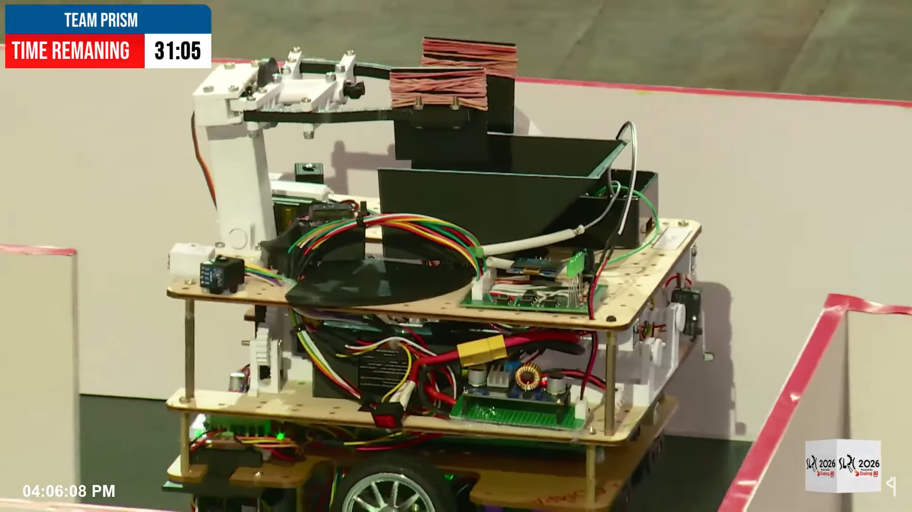

Autonomous Physical-Virtual Master-Slave Robot System
A physical robot that discovers a maze and remotely commands a simulated 'slave' robot through 14 waypoints — built for the Sri Lankan Robotics Challenge 2026.

Overview
SLRC 2026's University Category set an unusual challenge: a real-world robot has to explore and decode a maze, then use what it learns to control a separate, networked simulated robot in real time — all while a dynamically patrolling hostile agent tries to intercept it.
Our physical robot used AprilTag-based navigation to localize itself and decode a sequence of multi-key coordinates hidden throughout the maze. It also performed physical object pick-and-place using a custom-built slider mechanism as part of the task sequence.
The decoded waypoint sequence was then transmitted over a REST API to control a networked simulated 'slave' robot through 14 sequenced waypoints, with logic built in to dynamically avoid a hostile agent patrolling the simulated environment. The entry was selected among the Top 8 nationally.
Key Features
- 01AprilTag-based localization and maze navigation for the physical 'master' robot
- 02Multi-key coordinate decoding to build the waypoint sequence for the virtual robot
- 03Custom slider mechanism for physical object pick-and-place
- 04Real-time REST API control of a networked simulated robot across 14 sequenced waypoints
- 05Dynamic avoidance logic against a patrolling hostile agent in the simulated environment
- 06Finalist — Top 8 nationally, SLRC 2026 University Category
Runs
 YouTube
YouTube
Summary Video